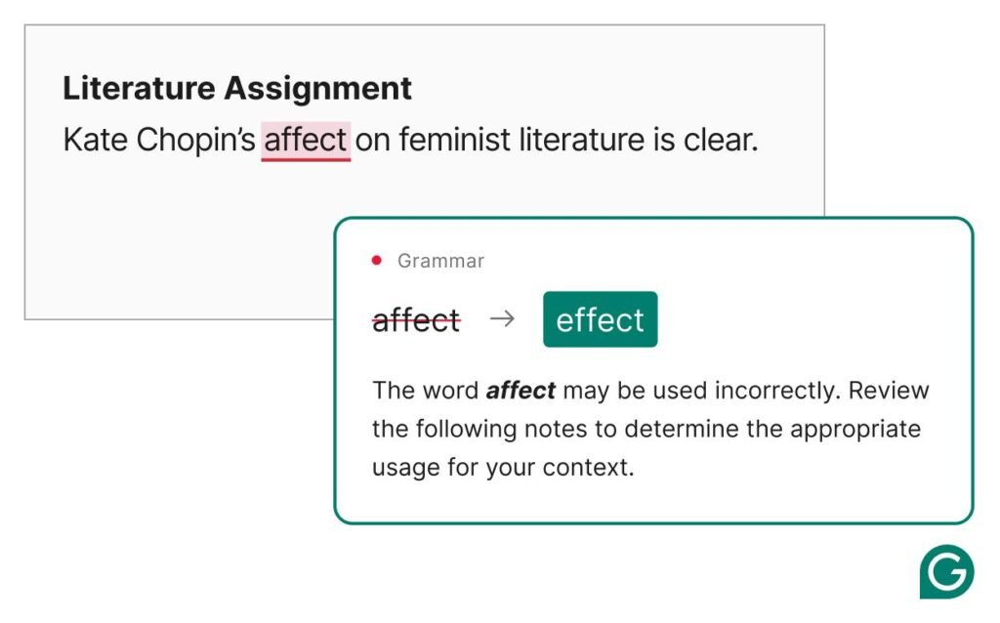
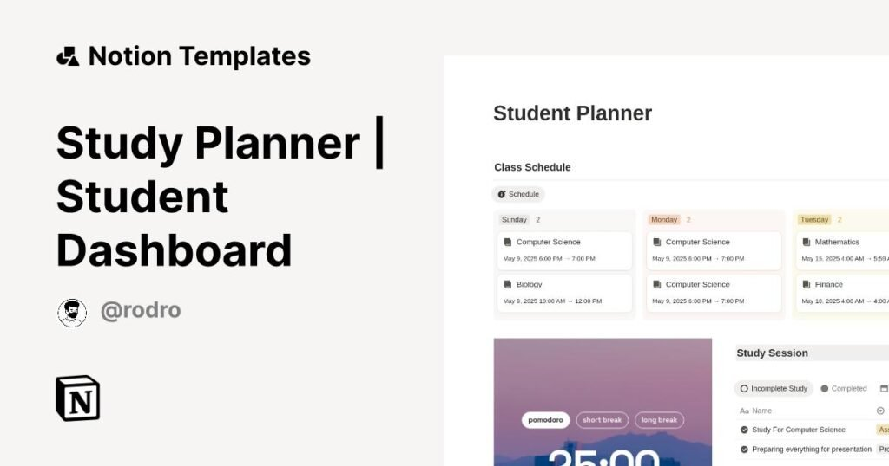
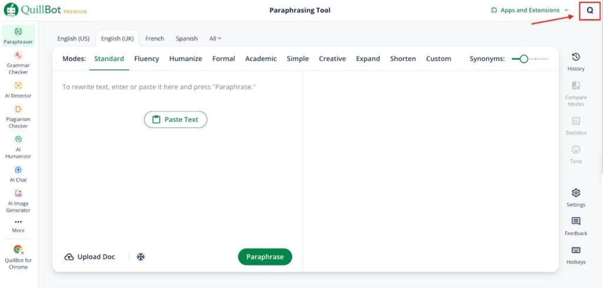
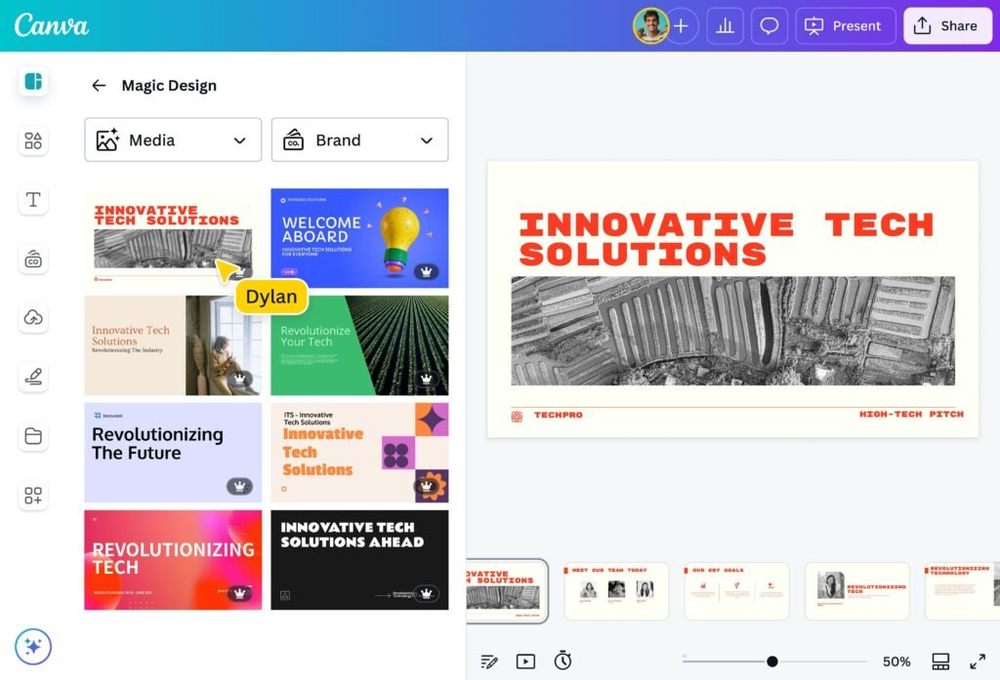
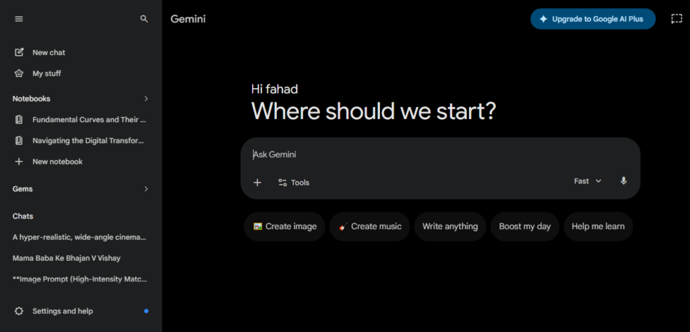
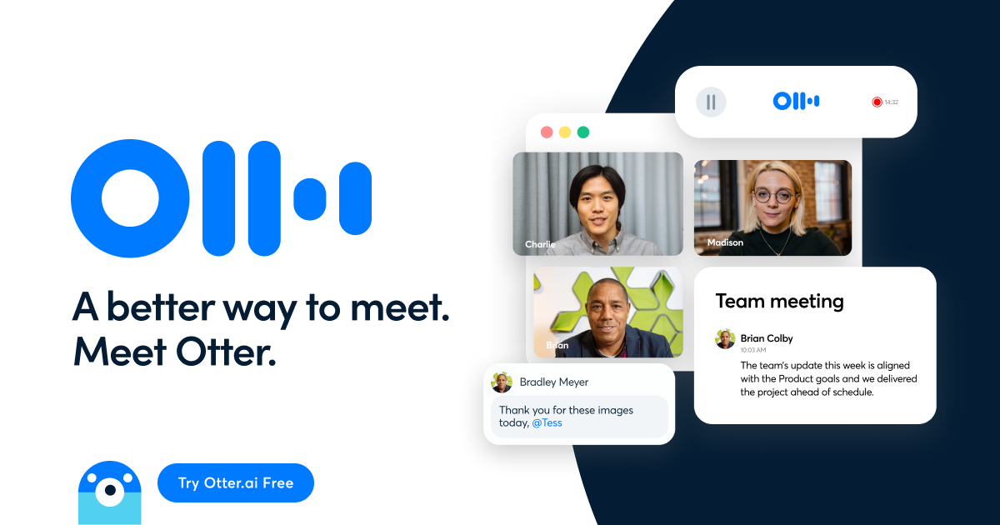
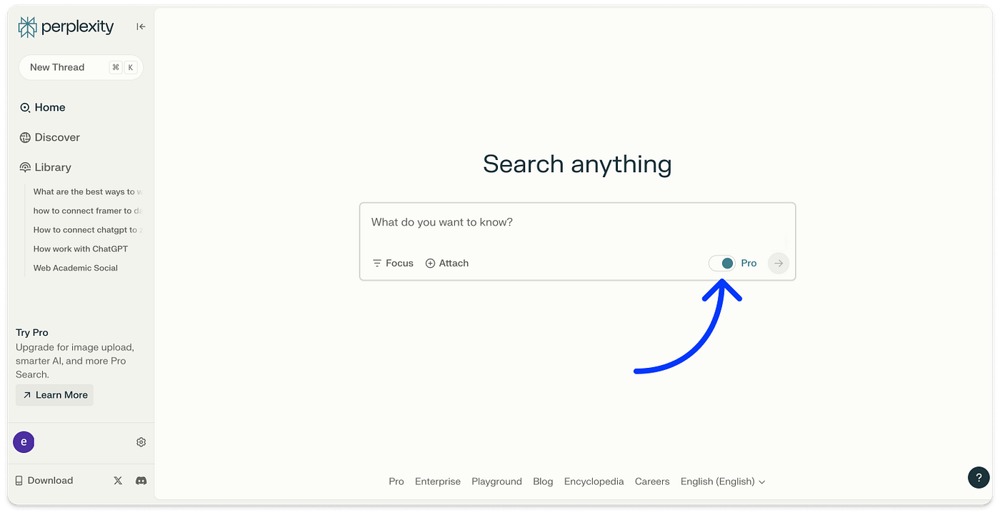
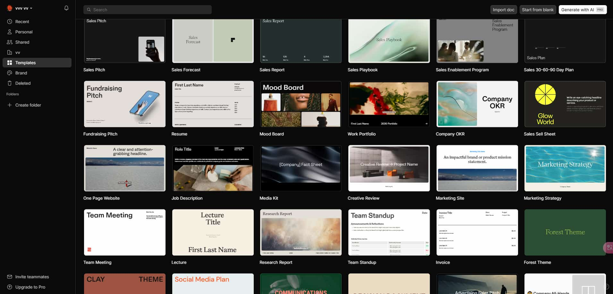

The Future of Learning with AI
Artificial Intelligence is rapidly transforming the way students learn, research, and complete assignments. In 2026, students are no longer limited to traditional study methods like textbooks and handwritten notes. Instead, they have access to powerful free AI tools that can simplify complex subjects, improve writing quality, and dramatically increase productivity.
The best part is that many of these tools are completely free, making advanced learning accessible to everyone regardless of budget. Whether you are struggling with essays, trying to stay organized, or preparing for exams, AI tools can help you study smarter instead of harder.
In this comprehensive guide, you will discover the 10 best free AI tools for students, along with detailed insights, practical use cases, and expert tips to maximize their potential.
Why Free AI Tools Are Essential for Students in 2026
Access to Powerful Technology Without Cost
Students no longer need expensive software to succeed. Free AI tools provide access to advanced capabilities such as writing assistance, research support, and productivity management, leveling the playing field for all learners.
Save Time and Increase Efficiency
AI tools automate repetitive tasks like note-taking, summarizing, and editing. This allows students to focus more on understanding concepts rather than spending hours on manual work.
Improve Academic Performance
By offering instant explanations, structured content, and writing improvements, AI tools help students produce higher-quality assignments and achieve better grades.
Personalized Learning Experience
AI adapts to individual learning styles. Students can ask questions in their own way, receive tailored responses, and learn at their own pace.
H3: Enhance Creativity and Critical Thinking
AI tools are not just about automation. They help students brainstorm ideas, explore new perspectives, and develop stronger analytical skills.
10 Best Free AI Tools for Students in 2026
1. ChatGPT – The Most Powerful All-in-One AI Tool for Students
ChatGPT is widely considered the most versatile AI tool available to students today. It functions as a multi-purpose assistant capable of handling a wide range of academic tasks, making it an essential tool in any student’s workflow.
Core Features
ChatGPT can generate essays, answer complex questions, summarize long texts, assist with coding, and even help create structured study plans. Its conversational interface allows students to ask follow-up questions, making learning more interactive and personalized.
Best Use Cases for Students
Students commonly use ChatGPT for homework assistance, essay writing, brainstorming ideas, simplifying difficult concepts, and preparing for exams. It is particularly useful for subjects that require explanation and understanding rather than memorization.
Advanced Benefits
One of the most powerful aspects of ChatGPT is its ability to adapt to the user’s level of understanding. Whether you are a beginner or an advanced learner, it can tailor responses to match your needs, effectively acting as a personalized tutor.
Limitations
Despite its strengths, ChatGPT is not perfect. It may occasionally provide incorrect or outdated information, so students should always verify important details before using them in academic work.
Pro Strategy
Use specific and detailed prompts to get better results. For example, instead of asking a vague question, ask for step-by-step explanations or simplified summaries tailored to your level.
2. Grammarly – Your Personal Writing Coach
Grammarly helps students improve their writing by correcting grammar, spelling, tone, and clarity in real time.
It is especially useful for essays, assignments, and emails. The free version provides essential corrections that can significantly enhance writing quality.
Students who use Grammarly regularly often notice improvements in their communication skills.

Core Features
Grammarly provides real-time grammar correction, spelling checks, tone analysis, and sentence restructuring. It also helps improve vocabulary and readability.
Best Use Cases
Students use Grammarly for essays, research papers, assignments, emails, and even scholarship applications. It ensures that all written communication is clear, professional, and error-free.
Advanced Benefits
Over time, Grammarly helps students become better writers by teaching them the reasoning behind corrections. This makes it both a writing tool and a learning tool.
Limitations
The free version has some limitations, and advanced features require a premium subscription. However, the free version is still powerful enough for most student needs.
Pro Strategy
Instead of accepting every suggestion automatically, review each correction to understand the improvement. This builds long-term writing skills.
3. Notion AI – Smart Note-Taking and Organization
Notion AI combines note-taking, task management, and AI assistance into a single platform.
Students can organize their study schedules, create structured notes, and generate summaries instantly. It is ideal for managing multiple subjects and staying productive.
The ability to keep everything in one place makes it a powerful tool for academic success.

Core Features
- AI-powered note summarization
- Task and project management
- Custom study dashboards
- Content generation
Best Use Cases
- Organizing lecture notes
- Managing assignments and deadlines
- Creating study schedules
- Tracking academic progress
Advanced Benefits
Notion AI allows students to build a centralized learning system, reducing clutter and improving focus.
Limitations
- Learning curve for beginners
- Limited AI usage in free plan
Pro Strategy
Use templates for subjects and automate repetitive workflows.
4. QuillBot – Best Paraphrasing Tool for Students
QuillBot is designed to help students rewrite content while maintaining its original meaning.
It is particularly useful for avoiding plagiarism, improving sentence structure, and refining essays. The summarizer feature also helps condense long texts into key points.
Students can pair QuillBot with Grammarly for even better writing results.

Core Features
- Paraphrasing engine with multiple modes
- Summarizer tool
- Grammar checker
Best Use Cases
- Rewriting essays
- Improving clarity
- Summarizing research
Advanced Benefits
It helps students learn how to express ideas differently, which improves writing flexibility and originality.
Limitations
- Word limits in free version
- Limited paraphrasing modes
Pro Strategy
Use QuillBot after drafting content, not before.
5. Canva AI – Create Stunning Academic Projects
Canva AI allows students to create visually appealing presentations, posters, and infographics with ease.
Its AI-powered design suggestions make it simple to produce professional-quality visuals, even without design experience.
This is especially helpful for school projects and presentations that require creativity.

Core Features
- AI-generated presentations
- Design templates
- Image and video creation
Best Use Cases
- School presentations
- Posters and infographics
- Group projects
Advanced Benefits
Visual learning improves retention, making Canva a powerful study aid.
Limitations
- Some premium templates locked
- Requires internet
Pro Strategy
Use AI-generated drafts, then customize for uniqueness.
6. Google Gemini – Free AI Research Assistant
Google Gemini helps students find information quickly and efficiently.
It can summarize articles, answer questions, and provide insights on various topics. This makes it a valuable tool for research and quick learning.
Students can use it alongside other tools to cross-check information.

Core Features
- Real-time data access
- Summarization
- Multi-format responses
Best Use Cases
- Research projects
- Quick answers
- Concept explanations
Advanced Benefits
It integrates well with the Google ecosystem, improving workflow efficiency.
Limitations
- May lack depth compared to specialized tools
7. Otter.ai – Lecture Transcription Made Simple
Otter.ai records lectures and converts spoken words into written notes.
This is extremely useful for students who want to focus on listening during class without worrying about taking notes.
The transcripts can be reviewed later for better understanding and revision.

Core Features
- Real-time transcription
- Audio recording
- Keyword highlights
Best Use Cases
- Lecture capture
- Revision notes
Advanced Benefits
Allows students to focus on listening instead of writing.
8. Perplexity AI – Accurate Research with Sources
Perplexity AI stands out because it provides answers backed by sources.
This makes it highly reliable for academic research, as students can verify information easily.
It is particularly useful for writing research papers and assignments.

Core Features
- Source citations
- Accurate responses
- Research-focused AI
Best Use Cases
- Research papers
- Fact-checking
Advanced Benefits
Improves credibility and academic integrity.
9. Tome AI – AI-Powered Presentation Creator
Tome AI helps students create presentations quickly using simple prompts.
It generates slides, content, and visuals automatically, saving hours of work.
Students can then customize the presentation to match their style and requirements.

Core Features
- AI slide creation
- Storytelling format
- Visual content generation
Best Use Cases
Project storytelling
10. Khanmigo – AI Tutor for Personalized Learning
Khanmigo acts as a virtual tutor that guides students step-by-step through problems.
It is especially effective for subjects like math and science, where understanding concepts is crucial.
Students can interact with it to clarify doubts and strengthen their knowledge.
Core Features
- Guided problem solving
- Personalized tutoring
- Interactive learning
Best Use Cases
- Math and science
- Concept clarification
Advanced Benefits
Encourages active learning instead of passive answers.
How to Choose the Best Free AI Tool for Your Needs
Identify Your Goals
Different tools serve different purposes. Choose based on whether you need help with writing, research, organization, or presentations.
Combine Multiple Tools
Using a combination of tools often produces the best results. For example, you can use ChatGPT for ideas, QuillBot for rewriting, and Grammarly for editing.
Understand Free Plan Limitations
Most free tools have some limitations, such as usage caps or restricted features. Being aware of these helps you use them more effectively.
Advanced Tips to Use AI Tools Effectively
Students who get the most out of AI tools follow a few key strategies. They always verify important information, avoid copying content directly, and use AI as a support system rather than a replacement for learning.
Combining tools, asking better questions, and refining outputs can significantly improve results.
Common Mistakes Students Should Avoid
Many students make the mistake of relying too heavily on AI or copying content without understanding it. This can harm learning and lead to academic issues.
Another common mistake is not fact-checking AI-generated information. Always review and refine outputs before using them.
Frequently Asked Questions (FAQs)
What are the best free AI tools for students?
The best tools include ChatGPT, Grammarly, Notion AI, and Perplexity AI due to their versatility and effectiveness.
Can AI tools replace studying?
No, AI tools are designed to support learning, not replace it. Students still need to understand concepts.
Are free AI tools enough for students?
Yes, most students can meet their academic needs using free versions of these tools.
Is using AI tools considered cheating?
It depends on how they are used. Using AI for learning and assistance is acceptable, but copying content without understanding is not.
Which AI tool is best for writing essays?
Grammarly and ChatGPT are excellent choices for writing and editing essays.
Conclusion: Transform Your Study Experience with AI
AI tools are revolutionizing education by making learning faster, smarter, and more accessible. With the right tools, students can improve productivity, enhance understanding, and achieve better results without spending money.
The key is to use these tools wisely, combine their strengths, and maintain academic integrity. By doing so, students can unlock their full potential and stay ahead in an increasingly competitive academic environment.
Start exploring these free AI tools today, and you will quickly see how they can transform the way you study and learn.
Hopefully you will love our lines on Top 10 Free Ai Tools for Students, If you have any query, mention in the comment here